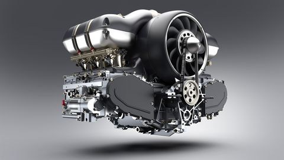
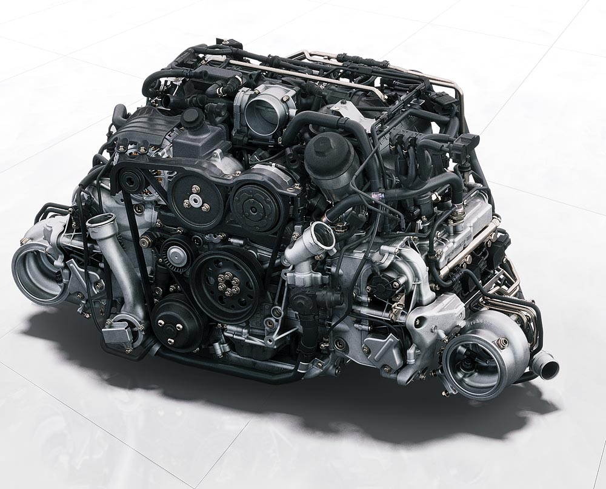

 
Motorul cu șase platuri este cel mai adesea asociat cu modelul lor 911, mașina sport de vârf a Porsche cu motor spate, care a folosit motoare cu șase platuri exclusiv din 1963. Motoarele au fost răcite cu aer până în 1999, când Porsche a început să folosească motoare răcite cu apă.
Alte modele Porsche care folosesc motoare cu șase plate sunt Porsche 914/6 1970–1972 (motor central), Porsche 959 1986–1993 (motor spate) și Porsche Boxster/Cayman 1996–2021 (motor central) .
Noul motor cu șase cilindri dispune de inducție forțată printr-un nou sistem de admisie. În acest scop, ruta anterioară a aerului de proces și răcirea aerului de alimentare a fost schimbată: o parte din aerul de proces curge acum prin prizele de aer caracteristice Turbo din secțiunile laterale din spate. În fața filtrelor de aer, care sunt acum situate în aripile din spate, acum au fost încorporate alte două fluxuri de aer prin grila capacului din spate. Aceasta înseamnă că noul 911 Turbo S are patru prize cu o secțiune transversală generală mai mare și o rezistență mai mică la vânt, îmbunătățind eficiența motorului.